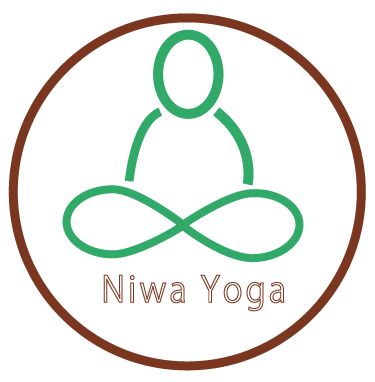
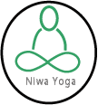
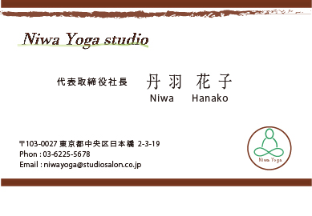

オフィス街にある女性専用少人数制のヨガスタジオのロゴです。リフレッシュやリラックスを目的としていること もあり、 コーポレートカラーは周りを茶色or黒にし、ヨガをする人を柔らかいイメージで緑色にしてヨガポーズを 取り入れてみました。 ロゴマークの名前「Niwa Yoga」はメリハリをつけて少し大きめで目立つようにしました。
オフィス街で働く20代～40代の会社員をターゲットにしてみました。

アピールポイント
オフィス街にある女性専用少人数制のヨガスタジオのロゴです。リフレッシュやリラックスを目的としていること もあり、 コーポレートカラーは周りを茶色or黒にし、ヨガをする人を柔らかいイメージで緑色にしてヨガポーズを 取り入れてみました。 ロゴマークの名前「Niwa Yoga」はメリハリをつけて少し大きめで目立つようにしました。
ユーザーターゲット
オフィス街で働く20代～40代の会社員をターゲットにしてみました。